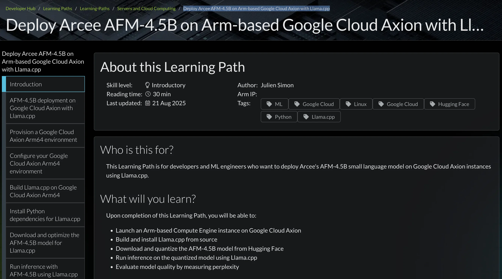

Small language models, such asAFM-4.5B, and Arm-based CPUs are a great match.
My latest tutorial was just published on theArm website. I’m walking you through the process of setting up a Google Axion instance, downloading and optimizing the model, running inference, and evaluating performance and perplexity. You’ll be surprised by the numbers!
➡️ Tutorial: “Deploy Arcee AFM-4.5B on Arm-based Google Cloud Axion with Llama.cpp”
https://learn.arm.com/learning-paths/servers-and-cloud-computing/arcee-foundation-model-on-gcp/